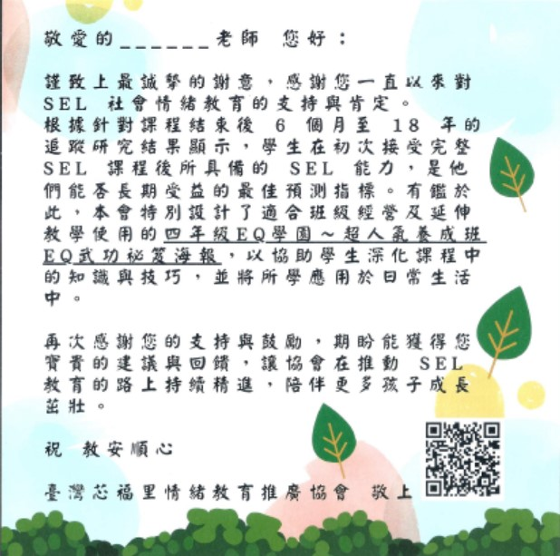
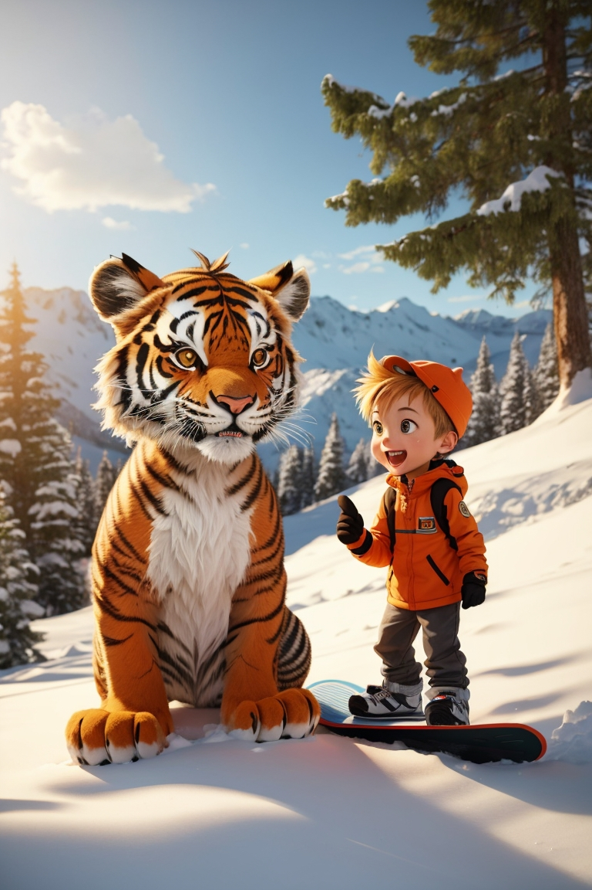
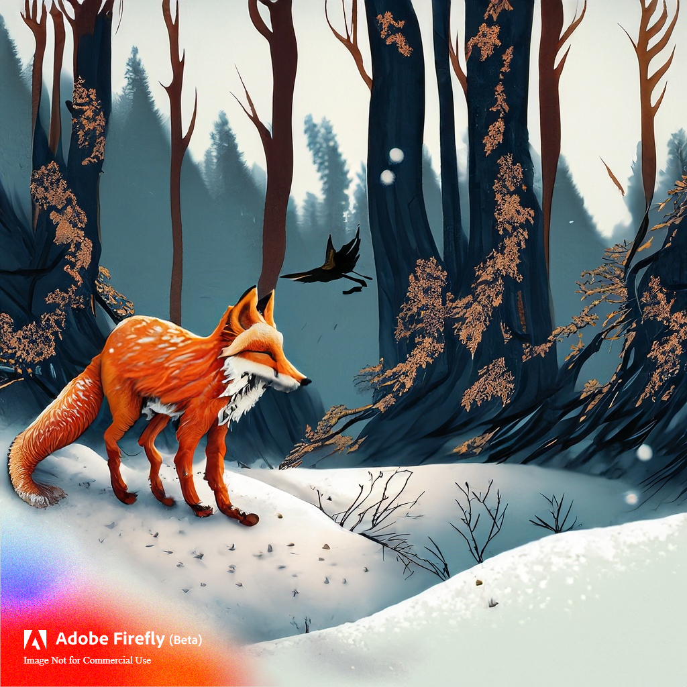

background dot-pattern
B/W Portrait in drawing dot-pattern background with color gradient.
CREATIVE PORTFOLIO
Creative design, image editing, and AI-assisted visual experiments.
View Projects
B/W Portrait in drawing dot-pattern background with color gradient.

PS layer mask with one railway image and one train image.

Appreciation card to teachers.

AI creation of Calvin and Hobbs.

orange fox in autumn forest.